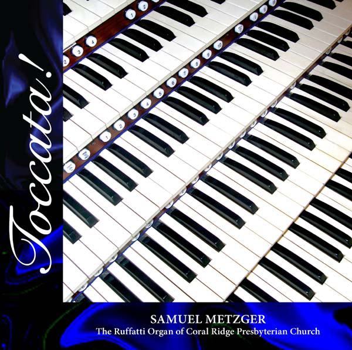
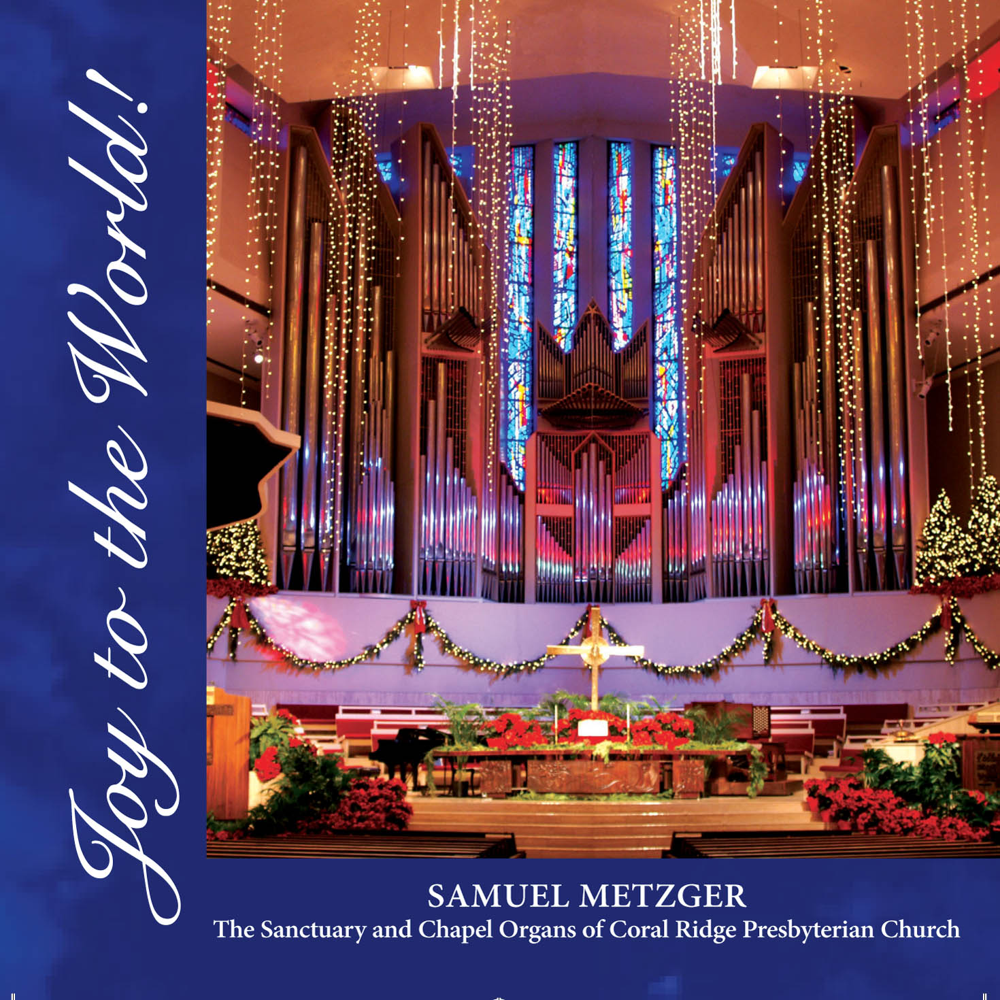
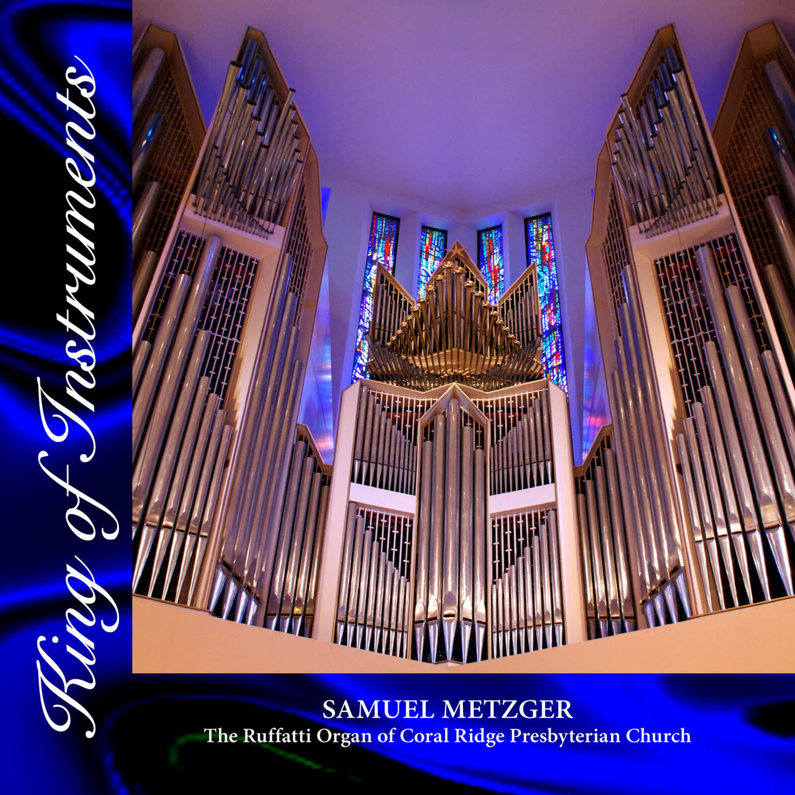
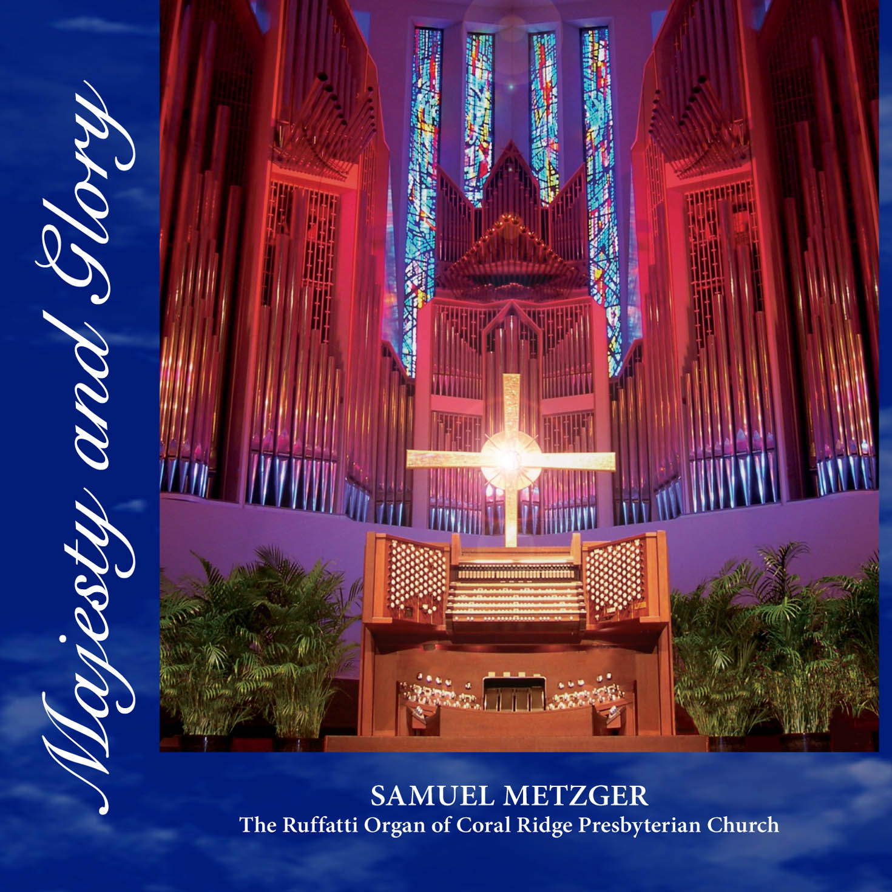
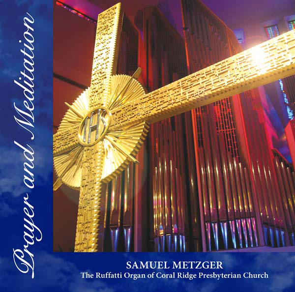
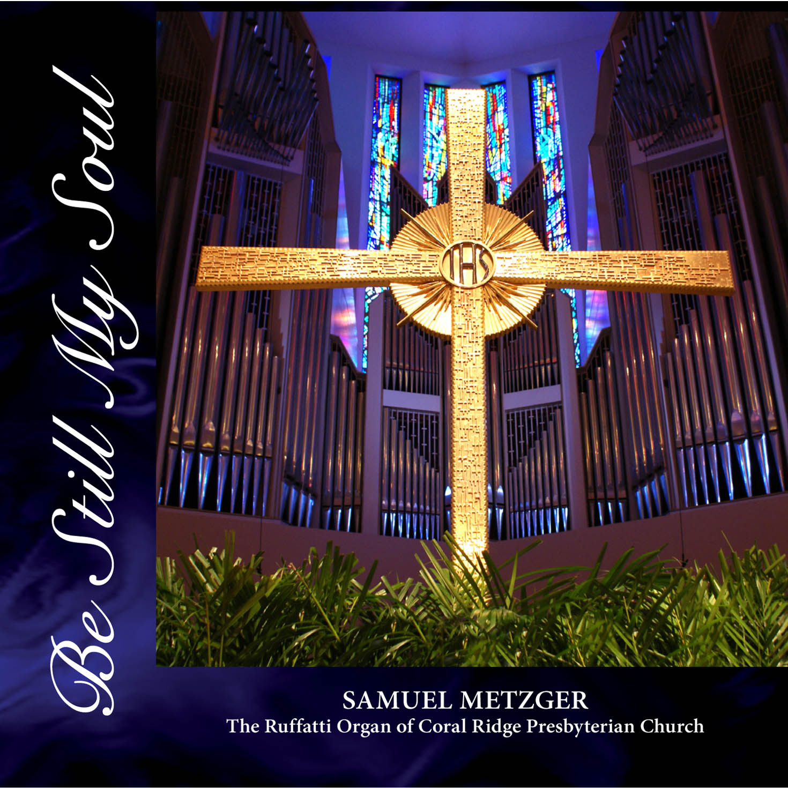

Recordings are available as digital downloads (MP3 and full resolution). To order, please use the contact page.

Toccata!
Toccata and Fugue in D Minor by Johann Sebastian Bach · Festive Trumpet Tune by David German · Pæan, A Song of Triumph (Fanfare) by S. W. Oliphant Chuckerbutty · Carillon de Longpont by Louis Vierne · Toccata in E Minor by Johann Pachelbel · Final from Symphony No. 1 by Louis Vierne · Pastorale by Louis Lefébure-Wely · Now Thank We All Our God by Johann Sebastian Bach (arr. Virgil Fox) · Fantasy Prelude on “Amazing Grace” arr. Charles Callahan · Agincourt Hymn by John Dunstable · Toccata in E Minor by Joseph Callaerts · Londonderry Air arr. Noel Rawsthorne · Carillon-Sortie by Henri Mulet · The Liberty Bell March by John Philip Sousa (arr. Samuel Metzger)
Order — $15
Joy to the World!
Joy to the World! arr. Samuel Metzger · O Holy Night! by Adolphe Adam (arr. Metzger) · Prelude on “What Child Is This” by Richard Purvis · From Heaven Came the Angels Bright by Johann Sebastian Bach · Hark! the Herald Angels Sing arr. David Willcocks · Noël by Louis-Claude Daquin · How Lovely Shines the Morning Star! by Paul Manz · Noël Suisse by Louis-Claude Daquin · From Heaven High I Come to You by Johann Pachelbel · Hallelujah Chorus by Georg Friedrich Händel (arr. Metzger) · Lo, How a Rose E’er Blooming by Johannes Brahms · Come, Thou Long-Expected Jesus arr. Samuel Metzger · O Come, All Ye Faithful arr. David Willcocks · It Came upon the Midnight Clear arr. David Cherwien · Lord of the Dance arr. Noel Rawsthorne · Angels, from the Realms of Glory arr. Samuel Metzger · This Is the Truth Sent from Above arr. Noel Rawsthorne · Shepherds Lullaby (Silent Night) by Charles Callahan · Festive Flourish on “Joy to the World!” by Michael Dell
Order — $15
King of Instruments
Toccata on “Rejoice, Ye Pure in Heart” by Albert L. Travis · In Thee is Gladness by Michael Burkhardt · Amazing Grace by Albert L. Travis · Variations on “All Creatures of Our God and King” by Denis Bédard · The Aquarium & The Swan from Carnival of the Animals by Camille Saint-Saëns (arr. Metzger) · Carillon de Westminster, op. 54 by Louis Vierne · Trio Sonata in E-flat Major, BWV 525, Johann Sebastian Bach · Toccata on “Thou Art the Rock” by Henri Mulet · Prelude and Fugue in G Major, BWV 541, Johann Sebastian Bach · Finlandia by Jean Sibelius (arr. Herbert Austin Fricker) · Toccata (from Symphony No. 5) by Charles-Marie Widor
Order — $15
Majesty and Glory
The Majesty and Glory of Your Name by Tom Fettke* · O Worship the King by Samuel Metzger · At the Name of Jesus by Cindy Berry* · Lead On, O King Eternal by Metzger · Jesu, Joy of Man’s Desiring by J. S. Bach (arr. Metzger) · Crown Him with Many Crowns by Metzger · Be Still My Soul by Mack Wilberg* · I Sing the Mighty Power of God by Metzger · Amazing Grace by Frederick Swann · When I Survey the Wondrous Cross by Metzger · Come, Thou Fount of Every Blessing by Mack Wilberg* · Come, Christians Join to Sing by Metzger · Holy, Holy, Holy by Metzger · Fairest Lord Jesus by Metzger · All Creatures of Our God and King by Metzger · Great is Thy Faithfulness by Dan Miller · How Great Thou Art by David T. Clydesdale
Order — $15
Prayer and Meditation
My Shepherd Will Supply My Need by Albin C. Whitworth · It Is Well with My Soul by John Ness Beck (arr. Janet Linker) · Morning Has Broken by Charles Callahan · Sicilienne by Maria Theresia von Paradis · I Need Thee Every Hour arr. Albin C. Whitworth · O Sacred Head, Now Wounded by Johann Sebastian Bach · Lamento (from Suite) by Denis Bédard · Largo (from Concerto in D Minor) by Antonio Vivaldi (arr. J. S. Bach) · There Is a Fountain arr. Gilbert M. Martin · God Will Take Care of You arr. Albin C. Whitworth · Prayer by Noel Rawsthorne · O Love That Will Not Let Me Go arr. Albin C. Whitworth · Arabesque (from Twenty-Four Pieces in Free Style) by Louis Vierne · Abide with Me arr. Albin C. Whitworth
Order — $15